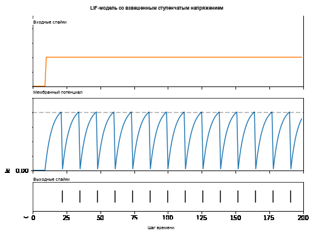
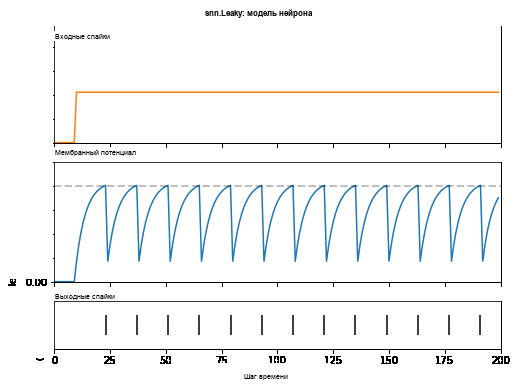
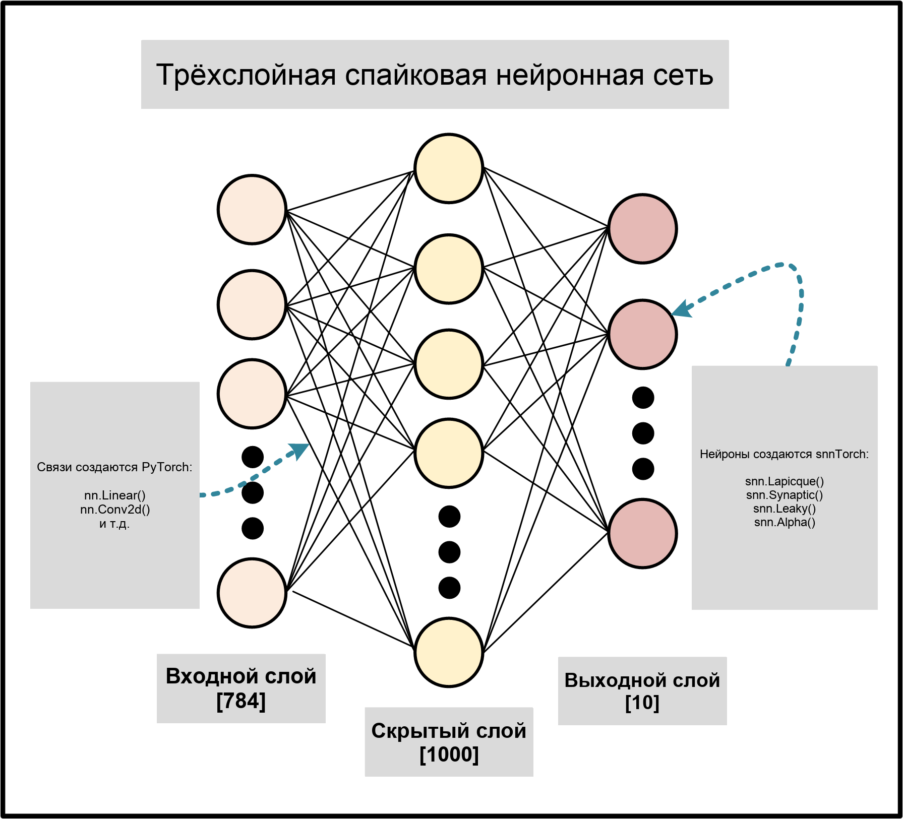
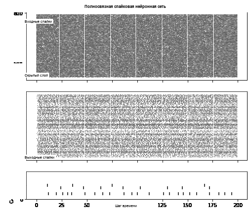
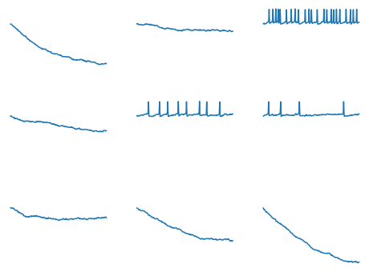

Русский перевод. Неофициальный перевод актуальной документации snnTorch latest (0.9.4). Оригинал: https://snntorch.readthedocs.io/en/latest/. Документация распространяется по лицензии CC BY-SA 3.0.
Учебник 3 - Прямосвязная спайковая нейронная сеть
Учебное пособие написано Джейсоном К. Эшрагианом (www.ncg.ucsc.edu)

Серия учебных пособий snnTorch основана на следующей статье. Если вы считаете эти ресурсы или код полезными в своей работе, пожалуйста, укажите следующий источник:
Примечание
- Этот учебник является статической нередактируемой версией. Интерактивные редактируемые версии доступны по следующим ссылкам:
Введение
В этом руководстве вы:
Узнайте, как упростить модель нейрона с утечкой интеграции и срабатывания (LIF) для удобства глубокого обучения
Реализуйте прямую спайковую нейронную сеть (SNN)
Установите последнюю версию дистрибутива snnTorch из PyPi:
$ pip install snntorch
# imports
import snntorch as snn
from snntorch import spikeplot as splt
from snntorch import spikegen
import torch
import torch.nn as nn
import matplotlib.pyplot as plt
1. Упрощение модели нейрона с утечкой интеграции и срабатывания
В предыдущем руководстве мы создали собственную модель нейрона LIF. Но она была довольно сложной и добавила массив гиперпараметров для настройки, включая \(R\), \(C\), \(\Delta t\), \(U_{\rm thr}\), и выбор механизма сброса. За всем этим трудно уследить, и сложность только возрастает при масштабировании до полноценной SNN. Поэтому давайте сделаем несколько упрощений.
1.1 Скорость затухания: beta
В предыдущем руководстве метод Эйлера использовался для вывода следующего решения пассивной мембранной модели:
Теперь предположим, что входной ток отсутствует, \(I_{\rm in}(t)=0 A\):
Пусть отношение последующих значений \(U\), т.е., \(U(t+\Delta t)/U(t)\) будет скоростью затухания мембранного потенциала, также известной как обратная постоянная времени:
Из \((1)\), это означает, что:
Для приемлемой точности, \(\Delta t << \tau\).
1.2 Взвешенный входной ток
Если мы предположим, что \(t\) представляет временные шаги в последовательности, а не непрерывное время, то мы можем установить \(\Delta t = 1\). Чтобы дальше сократить количество гиперпараметров, предположим \(R=1\). Из \((4)\), эти предположения приводят к:
Входной ток взвешивается на \((1-\beta)\). Дополнительно предполагая, что входной ток мгновенно вносит вклад в мембранный потенциал:
Обратите внимание, что дискретизация времени означает, что мы предполагаем, что каждый временной интервал \(t\) достаточно короток, чтобы нейрон мог испустить не более одного спайка в этом интервале.
В глубоком обучении весовой коэффициент входа часто является обучаемым параметром. Отходя от физически обоснованных предположений, сделанных до сих пор, мы включаем эффект \((1-\beta)\) from \((6)\) в обучаемый вес \(W\), и заменяем \(I_{\rm in}[t]\) соответственно на вход \(X[t]\):
Это можно интерпретировать следующим образом. \(X[t]\) является входным напряжением или спайком и масштабируется синаптической проводимостью \(W\) для генерации инжекции тока в нейрон. Это дает нам следующий результат:
В будущих симуляциях эффекты \(W\) и \(\beta\) разделены. \(W\) является обучаемым параметром, который обновляется независимо от \(\beta\).
1.3 Спайкинг и сброс
Теперь мы вводим механизмы спайкинга и сброса. Напомним, что если мембранный потенциал превышает порог, то нейрон испускает выходной спайк:
Если спайк вызван, мембранный потенциал должен быть сброшен. Механизм сброса вычитанием моделируется следующим образом:
По мере того как \(W\) является обучаемым параметром, и \(U_{\rm thr}\) часто просто устанавливается в \(1\) (хотя его можно настраивать), это оставляет скорость затухания \(\beta\) как единственный оставшийся гиперпараметр для указания. Это завершает трудную часть этого руководства.
Примечание
Некоторые реализации могут использовать немного другие предположения. Например, \(S[t] \rightarrow S[t+1]\) в \((9)\), или \(X[t] \rightarrow X[t+1]\) в \((10)\). Вышеприведенный вывод используется в snnTorch, так как, по нашему мнению, он интуитивно отображается на представление рекуррентной нейронной сети без какого-либо изменения производительности.
1.4 Реализация кода
Реализация этого нейрона на Python выглядит следующим образом:
def leaky_integrate_and_fire(mem, x, w, beta, threshold=1):
spk = (mem > threshold) # if membrane exceeds threshold, spk=1, else, 0
mem = beta * mem + w*x - spk*threshold
return spk, mem
Чтобы установить \(\beta\), у нас есть выбор: либо использовать уравнение \((3)\) для его определения, либо задать его напрямую. Здесь мы будем использовать \((3)\) для демонстрации, но в будущем он будет просто задан жёстко, так как мы больше сосредоточены на работающем решении, а не на биологической точности.
Уравнение \((3)\) говорит нам, что \(\beta\) представляет собой отношение мембранного потенциала между двумя последовательными временными шагами. Решите это, используя непрерывную зависящую от времени форму уравнения (предполагая отсутствие инжекции тока), которая была выведена в Учебном пособии 2:
\(U_0\) является начальным мембранным потенциалом в \(t=0\). Предположим, что зависящее от времени уравнение вычисляется на дискретных шагах \(t, (t+\Delta t), (t+2\Delta t)~...~\), тогда мы можем найти отношение мембранного потенциала между последующими шагами, используя:
# set neuronal parameters
delta_t = torch.tensor(1e-3)
tau = torch.tensor(5e-3)
beta = torch.exp(-delta_t/tau)
>>> print(f"The decay rate is: {beta:.3f}")
The decay rate is: 0.819
Запустите быструю симуляцию, чтобы проверить, правильно ли нейрон реагирует на ступенчатый входной сигнал напряжения:
num_steps = 200
# initialize inputs/outputs + small step current input
x = torch.cat((torch.zeros(10), torch.ones(190)*0.5), 0)
mem = torch.zeros(1)
spk_out = torch.zeros(1)
mem_rec = []
spk_rec = []
# neuron parameters
w = 0.4
beta = 0.819
# neuron simulation
for step in range(num_steps):
spk, mem = leaky_integrate_and_fire(mem, x[step], w=w, beta=beta)
mem_rec.append(mem)
spk_rec.append(spk)
# convert lists to tensors
mem_rec = torch.stack(mem_rec)
spk_rec = torch.stack(spk_rec)
plot_cur_mem_spk(x*w, mem_rec, spk_rec, thr_line=1,ylim_max1=0.5,
title="LIF Neuron Model With Weighted Step Voltage")
{kind=link}

2. Модель нейрона с утечкой в snnTorch
То же самое можно достичь, создав экземпляр snn.Leaky, аналогично тому, как мы использовали snn.Lapicque в предыдущем учебном пособии, но с меньшим количеством гиперпараметров:
lif1 = snn.Leaky(beta=0.8)
Модель нейрона теперь хранится в lif1. Чтобы использовать этот нейрон:
Входы
cur_in: каждый элемент \(W\times X[t]\) последовательно подается как входmem: мембранный потенциал предыдущего шага, \(U[t-1]\), также подается как вход.
Выходы
spk_out: выходной спайк \(S[t]\) (‘1’ если есть спайк; ‘0’ если спайка нет)mem: мембранный потенциал \(U[t]\) текущего шага
Все они должны быть типа torch.Tensor. Обратите внимание, что здесь мы предполагаем,
что входной ток уже был взвешен перед подачей в
snn.Leaky нейрон. Это станет более понятно, когда мы построим
модель масштаба сети. Также, уравнение \((10)\) было сдвинуто во времени
на один шаг назад без потери общности.
# Small step current input
w=0.21
cur_in = torch.cat((torch.zeros(10), torch.ones(190)*w), 0)
mem = torch.zeros(1)
spk = torch.zeros(1)
mem_rec = []
spk_rec = []
# neuron simulation
for step in range(num_steps):
spk, mem = lif1(cur_in[step], mem)
mem_rec.append(mem)
spk_rec.append(spk)
# convert lists to tensors
mem_rec = torch.stack(mem_rec)
spk_rec = torch.stack(spk_rec)
plot_cur_mem_spk(cur_in, mem_rec, spk_rec, thr_line=1, ylim_max1=0.5,
title="snn.Leaky Neuron Model")
Сравните этот график с вручную выведенным нейроном с утечкой типа "интегрируй и воспламеняй". Сброс мембранного потенциала немного слабее: то есть используется мягкий сброс. Это было сделано намеренно, поскольку это обеспечивает лучшую производительность на нескольких эталонных тестах глубокого обучения. Вместо этого используется следующее уравнение:
Эта модель имеет те же необязательные входные аргументы, что и reset_mechanism
и threshold как описано для модели нейрона Лапика.
{kind=link}

3. Прямосвязанная спайковая нейронная сеть
До сих пор мы рассматривали только то, как один нейрон реагирует на входной стимул. snnTorch позволяет легко масштабировать это до глубокой нейронной сети. В этом разделе мы создадим трехслойную полносвязную нейронную сеть размеров 784-1000-10. По сравнению с нашими предыдущими симуляциями, каждый нейрон теперь будет интегрировать гораздо больше входящих входных спайков.
{kind=link}

PyTorch используется для формирования связей между нейронами, а snnTorch — для создания нейронов. Сначала инициализируйте все слои.
# layer parameters
num_inputs = 784
num_hidden = 1000
num_outputs = 10
beta = 0.99
# initialize layers
fc1 = nn.Linear(num_inputs, num_hidden)
lif1 = snn.Leaky(beta=beta)
fc2 = nn.Linear(num_hidden, num_outputs)
lif2 = snn.Leaky(beta=beta)
Затем инициализируйте скрытые переменные и выходные данные каждого спайкового
нейрона. По мере увеличения размера сети это становится более утомительным.
Статический метод init_leaky() можно использовать для автоматического управления
этим. Все нейроны в snnTorch имеют свои собственные методы инициализации, которые
следуют тому же синтаксису, например, init_lapicque(). Форма
скрытых состояний автоматически инициализируется на основе размеров входных данных
во время первого прямого прохода.
# Initialize hidden states
mem1 = lif1.init_leaky()
mem2 = lif2.init_leaky()
# record outputs
mem2_rec = []
spk1_rec = []
spk2_rec = []
Создайте входную спайковую последовательность для передачи в сеть. Есть 200 временных шагов для симуляции по 784 входным нейронам, т.е. вход изначально имеет размеры \(200 \times 784\). Однако нейронные сети обычно обрабатывают данные мини-пакетами. snnTorch использует размерность с первым временным шагом:
[\(time \times batch\_size \times feature\_dimensions\)]
Поэтому 'unsqueeze' вход по dim=1 чтобы указать 'один пакет'
данных. Размеры этого входного тензора должны быть 200 \(\times\)
1 \(\times\) 784:
spk_in = spikegen.rate_conv(torch.rand((200, 784))).unsqueeze(1)
>>> print(f"Dimensions of spk_in: {spk_in.size()}")
"Dimensions of spk_in: torch.Size([200, 1, 784])"
Наконец-то пришло время запустить полную симуляцию. Интуитивный способ думать о том, как PyTorch и snnTorch работают вместе, состоит в том, что PyTorch соединяет нейроны, а snnTorch загружает результаты в спайковые модели нейронов. С точки зрения программирования сети, эти спайковые нейроны можно рассматривать как изменяющиеся во времени функции активации.
Вот последовательное описание того, что происходит:
Модуль \(i^{th}\) вход от
spk_inдо \(j^{th}\) нейрон взвешивается параметрами, инициализированными вnn.Linear: \(X_{i} \times W_{ij}\)Это генерирует член входного тока из уравнения \((10)\), внося вклад в \(U[t+1]\) спайкового нейрона
Если \(U[t+1] > U_{\rm thr}\), затем от этого нейрона генерируется спайк
Этот спайк взвешивается весом второго слоя, и описанный выше процесс повторяется для всех входов, весов и нейронов.
Если спайка нет, то пост-синаптическому нейрону ничего не передается.
Единственное отличие от наших предыдущих симуляций в том, что теперь мы
масштабируем входной ток весом, сгенерированным nn.Linear,
а не вручную задавая \(W\) сами.
# network simulation
for step in range(num_steps):
cur1 = fc1(spk_in[step]) # post-synaptic current <-- spk_in x weight
spk1, mem1 = lif1(cur1, mem1) # mem[t+1] <--post-syn current + decayed membrane
cur2 = fc2(spk1)
spk2, mem2 = lif2(cur2, mem2)
mem2_rec.append(mem2)
spk1_rec.append(spk1)
spk2_rec.append(spk2)
# convert lists to tensors
mem2_rec = torch.stack(mem2_rec)
spk1_rec = torch.stack(spk1_rec)
spk2_rec = torch.stack(spk2_rec)
plot_snn_spikes(spk_in, spk1_rec, spk2_rec, "Fully Connected Spiking Neural Network")
{kind=link}

На данном этапе спайки не имеют реального смысла. Входы и веса инициализированы случайным образом, обучение не проводилось. Но спайки должны распространяться от первого слоя до выхода. Если вы не видите никаких спайков, возможно, вам
не повезло в лотерее инициализации весов — возможно, стоит
попробовать перезапустить последние четыре блока кода.
spikeplot.spike_count может создать счётчик спайков
выходного слоя. Следующая анимация будет генерироваться некоторое
время.
Примечание: если вы запускаете блокнот локально на своём компьютере, пожалуйста, раскомментируйте строку ниже и измените путь к вашему ffmpeg.exe
from IPython.display import HTML
fig, ax = plt.subplots(facecolor='w', figsize=(12, 7))
labels=['0', '1', '2', '3', '4', '5', '6', '7', '8','9']
spk2_rec = spk2_rec.squeeze(1).detach().cpu()
# plt.rcParams['animation.ffmpeg_path'] = 'C:\\path\\to\\your\\ffmpeg.exe'
# Plot spike count histogram
anim = splt.spike_count(spk2_rec, fig, ax, labels=labels, animate=True)
HTML(anim.to_html5_video())
# anim.save("spike_bar.mp4")
spikeplot.traces позволяет визуализировать следы мембранного потенциала. Мы построим графики для 9 из 10 выходных нейронов.
Сравните с анимацией и растровым графиком выше, чтобы увидеть, можете ли вы сопоставить следы с нейроном.
# plot membrane potential traces
splt.traces(mem2_rec.squeeze(1), spk=spk2_rec.squeeze(1))
fig = plt.gcf()
fig.set_size_inches(8, 6)
{kind=link}

Вполне нормально, если некоторые нейроны генерируют спайки, а другие полностью молчат. Опять же, ни один из этих спайков не имеет реального смысла, пока веса не обучены.
Заключение
Это описывает, как упростить модель нейрона с утечкой и интеграцией (leaky integrate-and-fire),
а затем использовать её для построения спайковой нейронной сети. На практике мы
почти всегда предпочтём использовать snn.Leaky вместо snn.Lapicque для
обучения сетей, так как пространство поиска гиперпараметров меньше.
Tutorial
4
подробно рассматривает модели второго порядка snn.Synaptic и snn.Alpha
модели. Следующий учебник не обязателен для обучения сети, так что если вы хотите перейти сразу
к глубокому обучению с snnTorch, то перейдите к Tutorial
5.
Если вам нравится этот проект, пожалуйста, рассмотрите возможность поставить звезду ⭐ репозиторию на GitHub, так как это самый простой и лучший способ поддержать его.
Для справки, документация может быть найдена здесь.
Дальнейшее чтение
snnTorch документация моделей Lapicque, Leaky, Synaptic и Alpha
Нейронная динамика: от одиночных нейронов до сетей и моделей познания от Вульфрама Герстнера, Вернера М. Кистлера, Ричарда Науда и Лиама Панински.
Теоретическая нейронаука: вычислительное и математическое моделирование нейронных систем от Лоуренса Ф. Эбботта и Питера Даяна